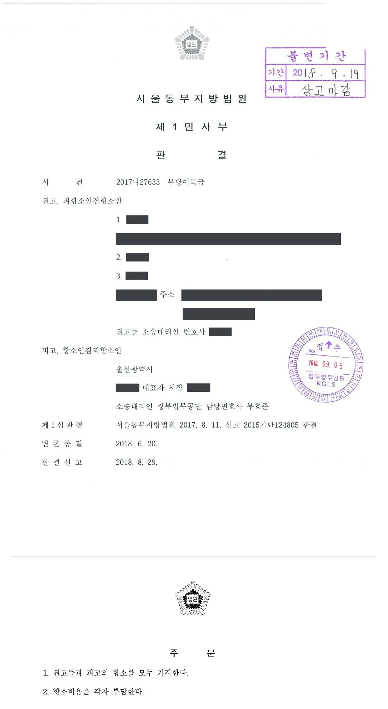
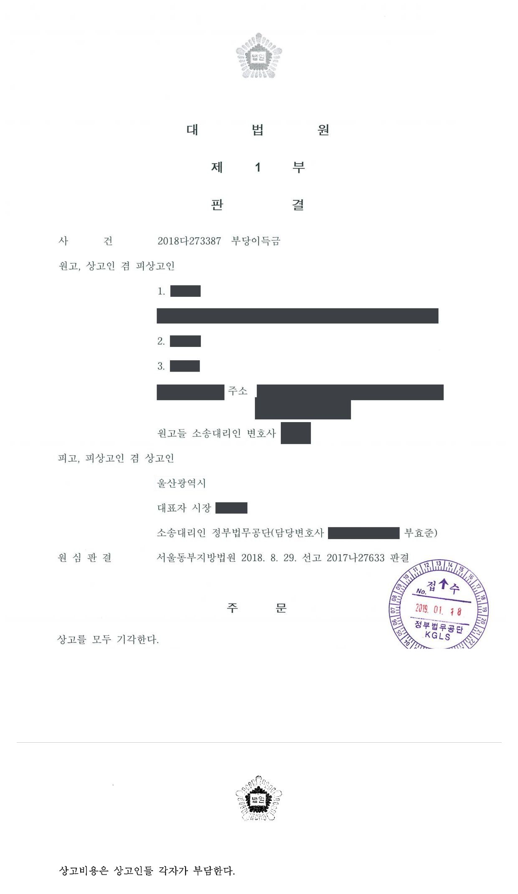

지방자치단체 도로 부지 부당이득반환 청구소송 (1·2·3심)
서울동부지방법원 2015가단124805 · 서울동부지방법원 2017나27633 · 대법원 2018다273387 · 담당변호사 부효준
판결문



사건의 요지
일제강점기에 도로로 지목이 변경된 토지의 상속인들이 지방자치단체를 상대로 부당이득 반환을 구한 사건으로, 토지의 분할·지목변경 경위와 사용·수익권 포기 여부, 임료 산정이 다투어졌습니다.
사건의 주요 내용
이 사건 토지(228㎡)는 1921년 12월 모번지에서 분할되면서 인근 토지들과 함께 지목이 '도로'로 바뀌어 일반 공중의 통행에 이용되어 온 땅입니다. 토지대장과 등기부에는 원고들의 선대가 1914년 소유권을 취득하고 1939년 4월 소유권보존등기를 마친 것으로 기재되어 있었습니다. 지방자치단체는 1972년 11월 이 구도로를 포함한 기존 도로를 넓히는 도시계획도로 개설공사를 시작하여 1973년 2월 완공하였고, 1980년경 확장공사를 거쳐 토지 가운데 221.7㎡를 도로로 점유하고 있었습니다.
선대의 상속인 3명은 2015년 9월 지방자치단체를 상대로, 소 제기 전 5년간의 임료 상당 부당이득(합계 약 2,150만 원)과 그 이후 점유 종료일까지 월 합계 약 43만 원의 지급을 구하는 소를 제기하였습니다. 임료는 토지를 공도로 보아 평가한 금액 전액을 기준으로 하였습니다. 부효준 변호사는 피고 지방자치단체를 대리하였습니다.
제1심은 2017년 8월 사실상 도로로 제한된 상태를 기준으로 임료를 공도 평가액의 3분의 1로 보아 청구액의 약 3분의 1(5년분 합계 약 727만 원, 월 합계 약 14만 6천 원)만 인용하고 소송비용의 3분의 2를 원고들이 부담하도록 하였습니다. 쌍방이 항소하였으나 항소심은 2018년 8월 양쪽 항소를 모두 받아들이지 않았고, 쌍방이 상고한 대법원 사건도 2019년 1월 심리불속행으로 마무리되어 제1심 판결이 확정되었습니다.
쟁점
- 취득절차에 관한 서류를 제출하지 못하는 지방자치단체가 등기부상 소유자가 따로 있는 토지를 도로로 점유한 경우 자주점유의 추정이 깨어지는지
- 일제강점기에 도로로 편입된 토지에 관하여 보상을 통한 취득이나 소유자의 사용승낙(무상통행권 부여)을 인정할 수 있는지
- 종전부터 일반 공중의 통행에 사실상 공용되던 토지의 부당이득 산정에서 임료를 공도 기준으로 할지, 사실상 도로로 제한된 상태를 기준으로 할지
원고의 주장
- 이 토지는 선대 명의로 소유권보존등기가 마쳐진 원고들의 소유인데 피고가 1972년부터 아무런 권원 없이 도로로 점유·사용하고 있으므로, 임료 상당의 부당이득을 반환해야 한다고 주장하였습니다.
- 임료는 피고도 감정에서 토지를 '공도'로 평가하는 데 동의하였으므로 인근 표준지 공시지가를 기준으로 산정해야 하고, 항소심에서는 이 토지가 1921년 도시계획에 따라 공도에 편입된 뒤 피고가 점유를 승계하여 현재 차도·화단·자전거도로·보도로 쓰이는 시도이므로 공도를 전제로 평가한 월 임료 전액을 기준으로 해야 한다고 주장하였습니다.
부효준 변호사의 주장
- 피고는 1972년 11월 도로 개설공사로 점유를 시작한 뒤 20년 이상 소유의 의사로 평온·공연하게 점유하였으므로 취득시효가 완성되었고, 원고들은 피고에게 소유권이전등기절차를 이행할 의무가 있어 부당이득 청구에 응할 수 없다고 항변하였습니다.
- 자주점유의 추정이 깨어지지 않았다는 근거로, 구도로가 1921년부터 도로로 이용되었고 당시 특별세·보조금·주민들의 용지 기부 등의 절차로 취득되었다고 보는 것이 경험칙에 맞는 점, 1972년 공사 당시 구도로 부분만 보상자료를 남기지 않았고 1980년 확장공사 때도 토지조서에서 제외된 점, 상속인들이 40년이 넘도록 아무런 권리 행사나 이의를 하지 않은 점을 들었습니다. 항소심에서는 1921년 당시에도 토지수용령 등 보상 절차가 존재하였고 이 도로가 시구개정사업으로 개설된 신작로이므로 보상을 통하여 취득한 것으로 보아야 한다는 점, 1972년 공사 때 인접한 확장 부분 토지만 취득한 것은 구도로 부지는 이미 취득한 것으로 믿었기 때문이라는 점을 보충하였습니다.
- 구도로 부지의 명의가 모두 사인으로 남아 있고 보상 없이 무단점유하였다고 보는 것이 당시 법령에 비추어 경험칙에 반하는 점, 선대와 후손들이 이의를 제기하지 않은 점에 비추어 선대가 토지를 도로로 사용하는 것을 승낙하였다고 보아야 한다고 주장하였고, 임료 감정이 별다른 이유 없이 그 밖의 요인 보정치를 전부 반영한 것도 위법하다고 다투었습니다.
법원의 판단
제1심은 자주점유 추정은 국가나 지방자치단체에도 적용되지만 점유 개시 당시 소유권 취득의 법률요건이 없음을 알면서 무단점유한 것이 증명되면 추정이 깨어진다는 대법원 판례(1997. 8. 21. 선고 95다28625 전원합의체 판결, 2013. 2. 28. 선고 2012다99549 판결)를 전제로, 구 토지대장과 등기부에 선대의 소유권 취득과 1939년 소유권보존등기가 기재되어 있는데 피고가 취득절차에 관한 서류를 전혀 제출하지 못하므로 추정이 깨어졌다고 보았습니다. 피고가 든 사정들은 1921년에 적법한 취득절차를 밟았음을 전제로 하는 것이어서 그 뒤의 소유권보존등기와 맞지 않는다며 취득시효 항변을 받아들이지 않았습니다.
항소심은 여기에 지적공부가 멸실되지 않고 보존되어 있는데 국가나 지방자치단체의 소유권 취득을 뒷받침하는 기재가 전혀 없는 경우까지 함부로 적법한 취득 가능성을 수긍하여서는 안 된다는 대법원 판례(2011. 11. 24. 선고 2009다99143 판결)를 덧붙였습니다. 보상을 통한 취득 주장은 자료가 없고 보상이 있었다면 뒤에 소유권보존등기가 마쳐지지 않았을 것이라는 이유로, 사용승낙이나 무상통행권 부여 주장은 선대가 주변에 택지를 조성하였거나 도로 사용으로 인접 토지의 효용 증대 이익을 누린 사정이 없다는 이유로(대법원 2007. 1. 11. 선고 2006다34206 판결) 각각 배척하였습니다.
임료에 관하여는 종전부터 일반 공중의 교통에 사실상 공용되던 토지를 도로로 점유한 경우 도로로 제한된 현황대로 평가해야 한다는 법리(대법원 2008. 2. 1. 선고 2007다8914 판결 등)에 따라, 현재 시도라는 사정만으로 점유 개시 당시 공도로 개설·지정되었다고 볼 수 없다고 보고 사실상 사도의 평가 기준(인근 토지 평가액의 3분의 1 이내)을 적용하여 공도 기준 임료의 3분의 1로 산정하였습니다. 그 결과 원고별 상속분에 따라 5년분 합계 7,274,768원과 2015년 9월 12일부터 월 합계 146,161원의 지급을 명하고 나머지 청구를 받아들이지 않은 제1심 판결이 항소심과 상고심에서 그대로 유지되었습니다.
국가나 지방자치단체가 취득시효의 완성을 주장하는 토지의 취득절차에 관한 서류를 제출하지 못하고 있다고 하더라도, 그 토지에 관한 지적공부 등이 6·25 전란으로 소실되었거나 기타의 사유로 존재하지 아니함으로 인하여 국가나 지방자치단체가 지적공부 등에 소유자로 등재된 자가 따로 있음을 알면서 그 토지를 점유하여 온 것이라고 단정할 수 없고, 그 점유의 경위와 용도 등을 생각할 때 국가나 지방자치단체가 점유 개시 당시 공공용 재산의 취득절차를 거쳐서 소유권을 적법하게 취득하였을 가능성도 있다고 보이는 경우에는, 국가나 지방자치단체가 소유권 취득의 법률요건이 없이 그러한 사정을 잘 알면서 토지를 무단으로 점유한 것임이 입증되었다고 보기 어려우므로, 위와 같이 토지의 취득절차에 관한 서류를 제출하지 못하고 있다는 사정만으로 그 토지에 관한 국가나 지방자치단체의 자주점유 추정이 번복된다고 할 수는 없다(대법원 2013. 2. 28. 선고 2012다99549 판결 등 참조). 그러나 국가나 지방자치단체가 해당 토지의 점유·사용을 개시할 당시의 지적공부 등이 멸실된 바 없이 보존되어 있고 거기에 국가나 지방자치단체의 소유권 취득을 뒷받침하는 어떠한 기재도 없는 경우까지 함부로 적법한 절차에 따른 소유권 취득의 가능성을 수긍하여서는 아니 된다(대법원 2011. 11. 24. 선고 2009다99143 판결 등 참조)
서울동부지방법원 2015가단124805 판결 이유 '2. 가.' 부분(자주점유 추정에 관한 법리)과 서울동부지방법원 2017나27633 판결이 그 뒤에 추가한 문장
우선 피고의 첫째 주장에 대하여 보건대, 피고 또는 대한민국이 1921년 당시 적법한 절차를 통하여 이 사건 토지를 취득하였다는 아무런 자료가 없고 오히려 망인이 이 사건 토지의 지목 변경 이후 이 사건 토지에 관하여 적법한 소유권보존등기를 마친 사실은 앞서 본 바와 같은데, 이 사건 토지가 적법하게 수용되었다거나 망인이 이 사건 토지에 관한 보상을 받았다면, 위와 같은 소유권보존등기가 마쳐졌을 것으로 보이지 않는 점 등을 더해 보면, 피고가 주장하는 사정만으로는 피고나 대한민국이 일제강점기 당시 보상을 통하여 이 사건 토지를 취득하였다고 볼 수는 없다. 따라서 피고의 위 주장은 이유 없다.
서울동부지방법원 2017나27633 판결 이유 '2. 라. (2) (가) 피고의 주장에 대한 판단'
국가 또는 지방자치단체가 도로로 점유·사용하고 있는 토지에 대한 임대료 상당의 부당이득액을 산정하기 위한 토지의 기초가격은, 국가 또는 지방자치단체가 종전부터 일반 공중의 교통에 사실상 공용되던 토지에 필요한 공사를 하여 도로로서의 형태를 갖춘 다음 사실상 지배주체로서 도로를 점유하게 된 경우에는 도로로 제한된 상태 즉 도로인 현황대로 감정평가를 하여야 한다(대법원 2008. 2. 1. 선고 2007다8914 판결 등 참조).
이 사건 토지는 구도로에 포함되어 일반 공중의 통행에 사실상 공용되었던 토지였는데, 피고가 1972. 11.경부터 이 사건 토지 중 피고 점유 부분을 이 사건 도로로 개설하여 점유 사용해 온 사실은 앞서 본 바와 같으므로, 피고가 이 사건 토지를 점유 사용함으로써 취득한 부당이득액수를 산정함에 있어서는 사실상 도로로 제한받는 상태를 기초로 위 토지의 기초가격을 평가하는 것이 타당하다
서울동부지방법원 2015가단124805 판결 이유 '2. 나. 부당이득액수'
※ 판결 이유 가운데 이 사건의 판단 기준이 된 부분을 그대로 옮긴 것으로, 당사자 이름 등은 가렸습니다.
이 사건이 보여 주는 것
국가나 지방자치단체가 오래전부터 도로로 점유해 온 사유지에 관한 부당이득 사건에서는 ① 취득시효 항변과 자주점유 추정이 깨어지는지, ② 소유자가 도로 사용을 승낙하거나 사용·수익권을 포기하였다고 볼 수 있는지, ③ 임료를 어떤 현황을 기준으로 평가할지가 차례로 다투어집니다. 이 판결은 지적공부와 등기부가 멸실되지 않고 소유자 명의의 보존등기가 남아 있는데 지방자치단체가 취득이나 보상에 관한 서류를 전혀 내지 못하면 자주점유 추정이 깨어진다는 점을 보여 줍니다.
다른 한편 일제강점기부터 일반 공중의 통행에 쓰이던 토지는 점유 개시 당시 이미 도로였으므로 임료가 공도 평가액의 3분의 1(사실상 사도 기준)로 산정되어, 이 사건에서는 청구액의 약 3분의 1만 인용되었습니다. 토지 소유자 측은 점유 개시 당시의 토지 현황 자료를, 지방자치단체 측은 도로 개설·확장 당시의 취득·보상 자료를 확보하는 것이 결론을 좌우합니다.
관련 법령민법 제197조 제1항(자주점유 추정) · 공익사업을 위한 토지 등의 취득 및 보상에 관한 법률 시행규칙 제26조 제1항 제2호(사실상의 사도) · 민사소송법 제420조 · 소송촉진 등에 관한 특례법(지연손해금) · 상고심절차에 관한 특례법 제4조, 제5조(심리불속행)
관련 단어도로 부지 부당이득자주점유 추정 번복취득시효 항변무단점유일제강점기 지목변경 도로소유권보존등기사실상 사도 임료 3분의 1도로 현황 평가사용·수익권 포기지방자치단체 대리일부 인용심리불속행 확정
비슷한 처분을 받으셨다면
행정처분은 처분이 있음을 안 날부터 90일 이내에 행정심판이나 취소소송으로 다투어야 하고, 기간이 지나면 돌이킬 수 없는 처분은 집행정지를 서둘러야 합니다. 처분서를 받은 날짜부터 확인해 드립니다.